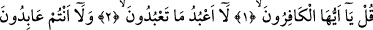
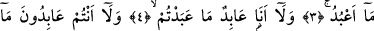
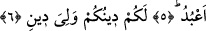

SİZİN DİNİNİZ SİZE,
BENİM DİNİM DE BANADIR
Bismillâhirrahmânirrahîm
1. (Rasûlüm!) De ki: Ey kâfirler!
2. Ben sizin tapmakta olduklarınıza tapmam.
3. Siz de benim taptığıma tapmıyorsunuz.
4. Ben de sizin taptıklarınıza aslâ tapacak değilim.
5. Evet, siz de benim taptığıma tapıyor değilsiniz.
6. Sizin dîniniz size, benim dînim de banadır.
Âlimler derler ki; Müşriklere kendi memleketlerinde, kendi güç ve kuvvetlerinin
bulunduğu yerde böyle hakîr düşürücü bir vasıfla hitâb edilmesi, Allah Rasûlü’nün
bütün insanlardan korunduğunu herkese îlân etmektedir. Ayrıca bu âyette O’nun (s.a.)
nübüvvet alâmetlerinden biri vardır.
“Kâfirûn/kâfirler” kelimesinin cem‘ müzekker sâlim kalıbında olması ise, onların az
olduklarını veya hakîr ve zelîl olduklarını ifâde etmektedir. Burada sözü edilen kâfirler,
Velîd b. Muğîre, Ebû Cehil, Âs b. Vâil, Ümeyye b. Halef, Esved b. Abd Yeğûs, Hâris b.
Kays ve benzeri belli kâfirlerdir. Sûrenin mazmûnundan anlaşıldığı üzere Allah Teâlâ
onların aslâ îmân etmeyeceğini bildirmektedir.
Burada bahsedilenlerin belli kâfirler olduğu kabûl edilirse, sûrenin başındaki “De!”
hitâbı Rasûlullah (s.a.) Efendimiz’e yönelik olur. Böylece, “Bu emrin gereği, her
müslümanın bunu her kâfir topluluğuna demesi anlaşılır. Hâlbuki şeriatte böyle bir
hüküm yoktur” şeklinde yapılabilecek bir îtirâza da yer kalmaz.
Rivâyete göre; Kureyş’in azgınlarından bir grup Allah Rasûlü’ne: “Gel bizim
dînimize uy, biz de senin dînine uyalım. Bir sene sen bizim ilâhlarımıza tap, bir sene de
biz senin ilâhına kulluk edelim” dediler. Buna karşılık Rasûlullah (s.a.): “Allah’a,
O’ndan başkasını ortak koşmaktan Allah’a sığınırım!” buyurdu. Bunun üzerine:
“Bizim bazı tanrılarımızı kabul et, biz de seni tasdîk edelim ve senin ilâhına tapalım”
dediler. Bunun üzerine bu sûre indi. Allah Rasûlü (s.a.) doğru Mescid-i Harâm’a gitti.